cf-plot gallery¶
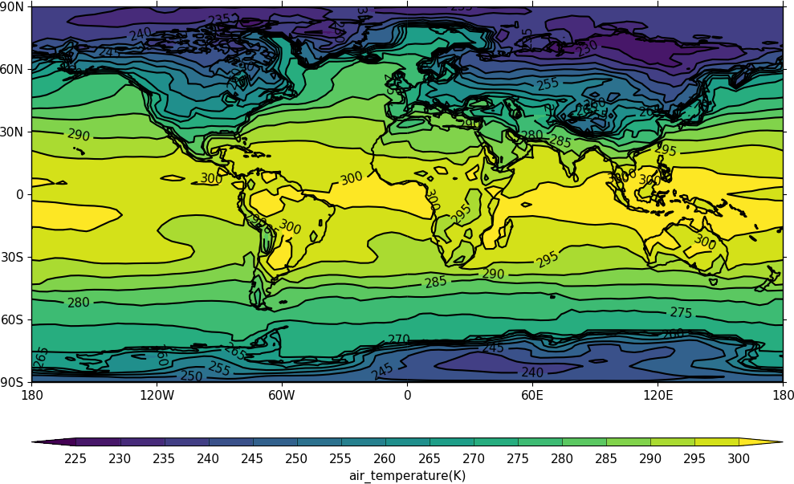
 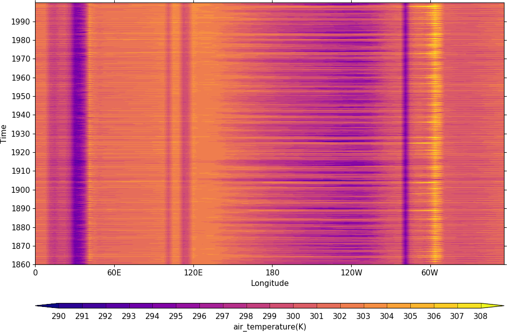
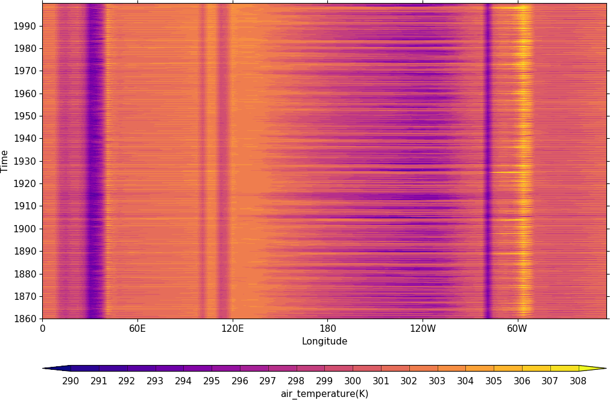
Cylindrical plots | Polar plots | Pressure/height plots | Hovmuller
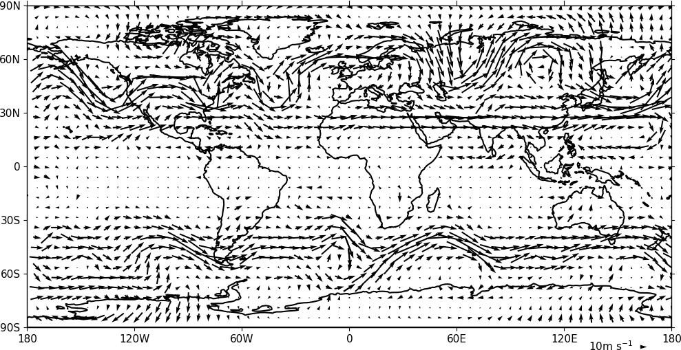 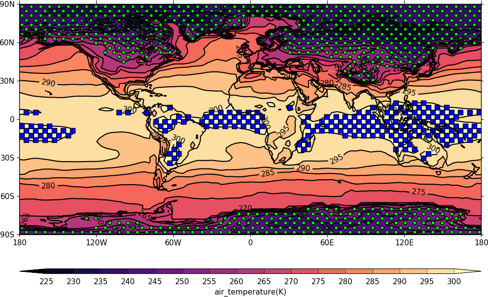 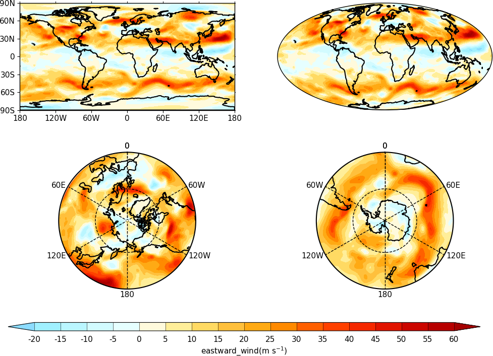
Vector plots | Stipple plots | Multiple plots on a page | Colour scales
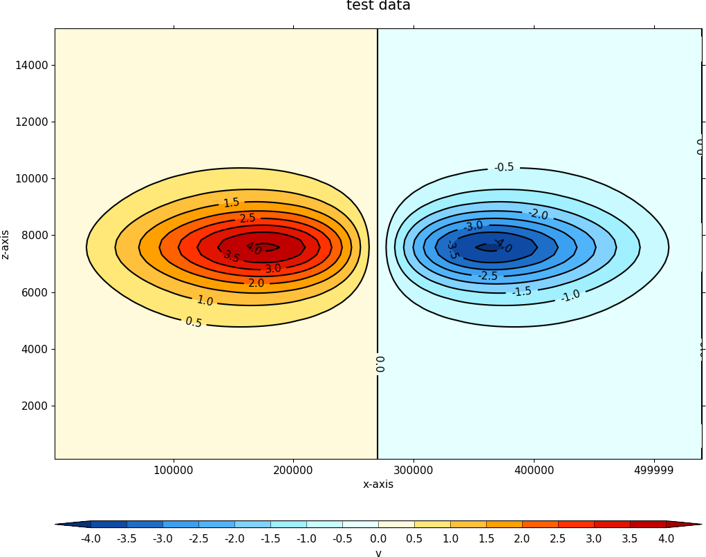 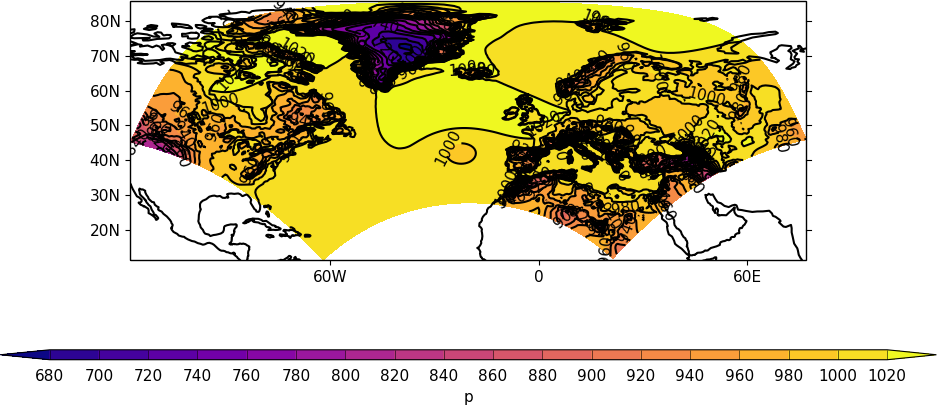 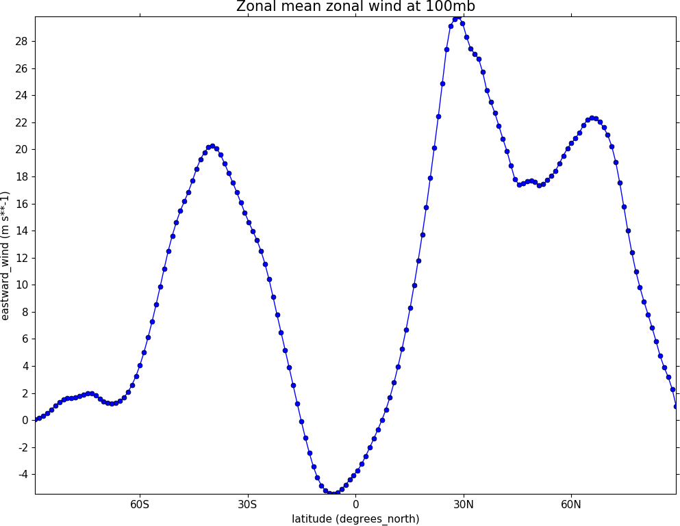
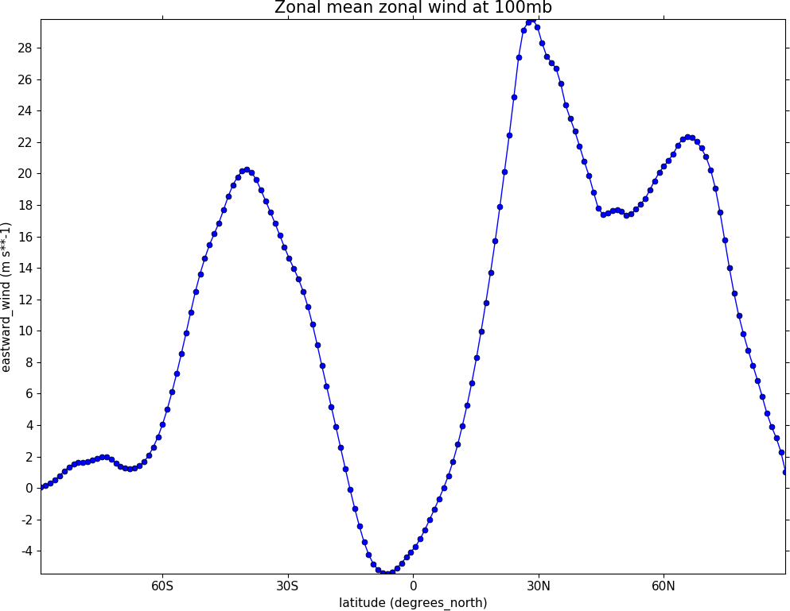
User defined axes | Rotated pole | Unstructured grids | Graphs
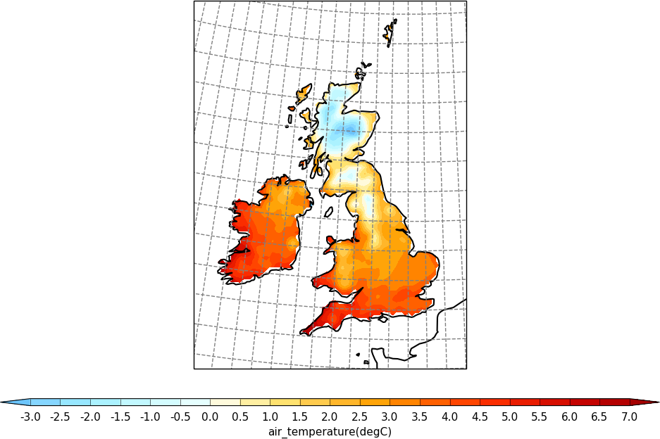 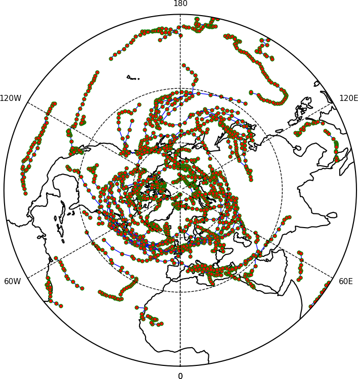